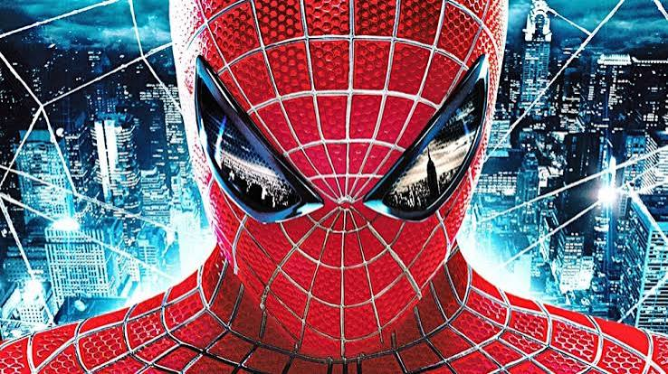
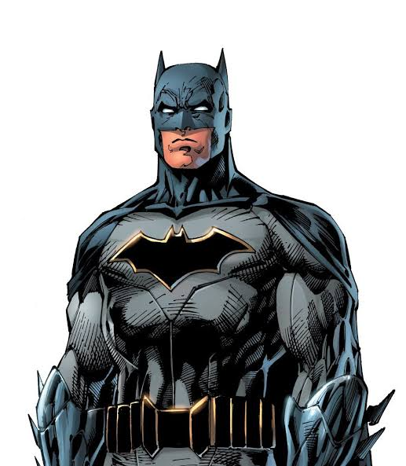
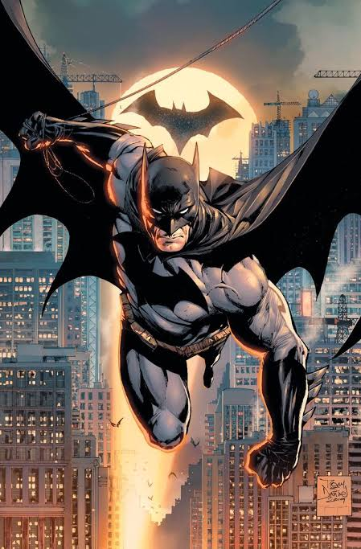

The amazing Spiderman spends his days protecting New York City, but also periodically faces extraterrestrial villains who come from different universes looking to wreek havoc. In the 2nd most recent Spiderman movie, Spiderman casts a spell to make everyone, including the villains, forget his identity. In the most recent Spiderman movie, Spiderman spends a long portion of the movie getting his friends to remember him again.

Batman spends his days battling different villains in Gotham. Typically, Batman will be fighting with Joker. Batman is a very cold hearted superhero, who is not as humurous as Spiderman

